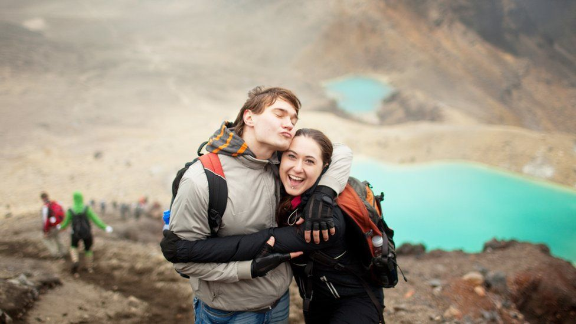
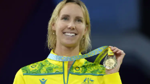
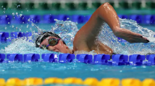
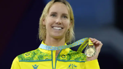
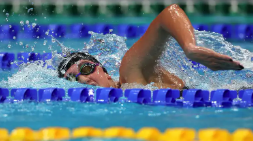

https://cdn.jsdelivr.net/npm/ionicons@6.0.2/
Subscribe
Login
First grain ship leaves under Russia deal
A ship carrying grain leaves Odesa under a deal aimed at
easing a global food crisis.
The first ship carrying grain has left a Ukrainian port
under a landmark deal with Russia. Turkish and Ukrainian
officials say the ship left the southern port of Odesa early
on Monday morning local time.

New Zealand fully reopens borders
The boardes were closes since March 2020.
New Zealand's borders are fully open for the first time
since March 2020, when they shut in an effort to keep out
Covid-19.
The PM and politicians go on tour
Celebrating 60 years of official friendship.
Jacinda Ardern and politicians from across the spectrum have
touched down in Samoa, marking the reopening of the Pacific
nation.
Tranding Now
1. Mystery as massive sinkhole appears in
Chile
2. The fight over political donations
3. One minute world news
4. Official unemployment edges up to 3.3%
Latest headlines
11:14 am
I tried the viral Milo and Baileys drink
11:13 am
Teen takes drunken joyride on ride-on lawnmower
11:10 am
Is this the best bounce back in Birmingham?
11:08 am
Is this the best fish burger in Auckland?
11:03 am
Live: Climate minister announces new law to cover climate hazards on LIMs
11:02 am
Election candidates for 2022
Commonwealth Games
 Is this the best bounce back in
Birmingham?
Beaten for first time in eight years, Adam Peaty was
"the lowest of the low". His response was
remarkable.

Australian swimmer becomes most successful
Emma McKeon wins her 19th medal and fifth gold in
Birmingham in the mixed 4x100m relay.
White Ferns in medal mix at Commonwealth
Games
Career-best figures from Hayley Jensen in big win
over Sri Lanka ensures Kiwis in
semifinals.

Eve Thomas fourth in 800m final
No golds for New Zealand on day five as 21-year-old
pole vaulter Imogen Ayris and the women's bowls four
secure bronzes.
Is this the best bounce back in
Birmingham?
Beaten for first time in eight years, Adam Peaty was
"the lowest of the low". His response was
remarkable.

Australian swimmer becomes most successful
Emma McKeon wins her 19th medal and fifth gold in
Birmingham in the mixed 4x100m relay.
White Ferns in medal mix at Commonwealth
Games
Career-best figures from Hayley Jensen in big win
over Sri Lanka ensures Kiwis in
semifinals.

Eve Thomas fourth in 800m final
No golds for New Zealand on day five as 21-year-old
pole vaulter Imogen Ayris and the women's bowls four
secure bronzes.